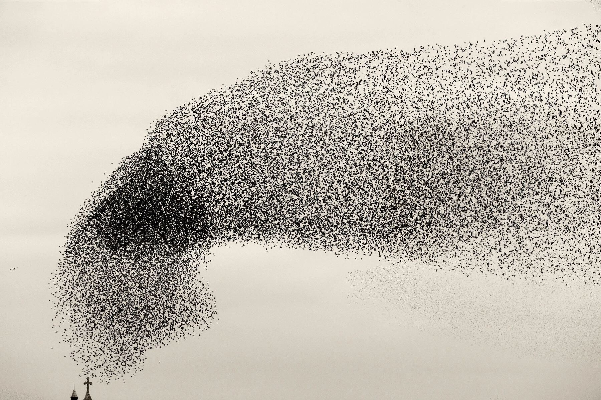

MURMUR — the shared intelligence that makes a fleet of robots act as one.
Many eyes. One picture — even when the network drops. We turn a fleet of small robots into one team watching your site: holding formation without GPS and staying online when connectivity falters. It senses, locates and decides what matters; you stay in control.
Large and remote sites — energy plants, ports, data centres, logistics yards — are held by fixed cameras and roving patrols. Cameras are static and blind between points; patrols can only be in one place at a time. The gaps move with them.
Most systems lean on a constant cloud or radio link and on GPS to know where things are. The moment connectivity is congested, interfered with, or simply out of range, they stop knowing what they're looking at — exactly when it matters most.
A single starling is easy prey. Ten thousand become a murmuration — one shifting body with no leader to lose. Each bird simply watches its nearest neighbours, and from those simple rules a single intelligent body emerges. MURMUR turns scattered robots into that murmuration on your perimeter: no centre to fail, no single point to lose.
MURMUR is Getin Lab's platform. It watches, locates and decides — and keeps people in control. The platform is modular and open: snap in a response system and the same brain can act, always with a human on the loop. Perception runs on open vision-language models, fine-tuned on our own data; the part that decides and prioritises is built by us. It plugs into the control systems you already run — no new screen to learn.
We build on proven tools — and spend our effort on the part they don't give you.
Fig. — One brain, many bodies. The middle is ours; the top is open.
Fig. 1 — Coverage. Dense nodes leave no seams.
Quadruped robots take stairs and rough ground; wheeled rovers bring endurance and payload. MURMUR composes the best mix for each site and shift.
Every point is watched by two or more robots, so detection is confirmed from several angles — far fewer false alarms, far fewer misses.
Roughly a third stay on watch while the rest charge, then surge to full strength on demand. Detach a group for a second area while the main line holds.
Fig. 2 — Three channels, one shape.
Like a good team: take direction from the control room, then hold the picture between yourselves, then go eyes-on and keep to the plan. As each link drops, MURMUR keeps producing an answer — it just carries honest uncertainty with it.
What it saw, how sure it is, and why it ranked one thing ahead of another. We use vision-language models and wrap them so a person can follow the reasoning and stay in control — transparent and explainable, not a black box.
Power generation, substations, pipelines and remote installations spread across ground that patrols can't continuously cover.
Terminals, yards and distribution hubs where the fence line is long, busy, and changing by the hour.
High-value private sites that need continuous, confirmed coverage and stay running when connectivity is degraded.
We start where the cycle is fast and the value is clear — commercial critical-infrastructure perimeters — and grow through partners into larger programmes across energy, ports and infrastructure worldwide.
A closed-loop visual tracking engine, built and deployed: locks on and verifies a target to sub-centimetre precision at range, on compact edge hardware.
Robotic node types designed and built in-house — proof the same brain composes real, heterogeneous hardware into one coordinated team.
A zero-copy edge pipeline (>30 FPS), Isaac Sim digital-twin validation, and a hardware-agnostic ROS 2 API that plugs into third-party cameras, robots and control systems.
Founder & CEO. Previously built visual navigation for UAVs operating in GPS-denied conditions — the problem at the heart of MURMUR.
Co-founder & CTO, with roughly two decades of domain-specific engineering experience.
An in-house AI research team means robotics and models move together — no hand-offs between teams, no hiring lag on the scarcest skill. We are anchored in Armenia's deep AI-research community in Yerevan, with world-class applied-ML talent close at hand. The in-house bench owns integration, productisation and deployment.
“No centre to fail. No blind spots. One picture that holds.” — Getin Lab · the MURMUR platform